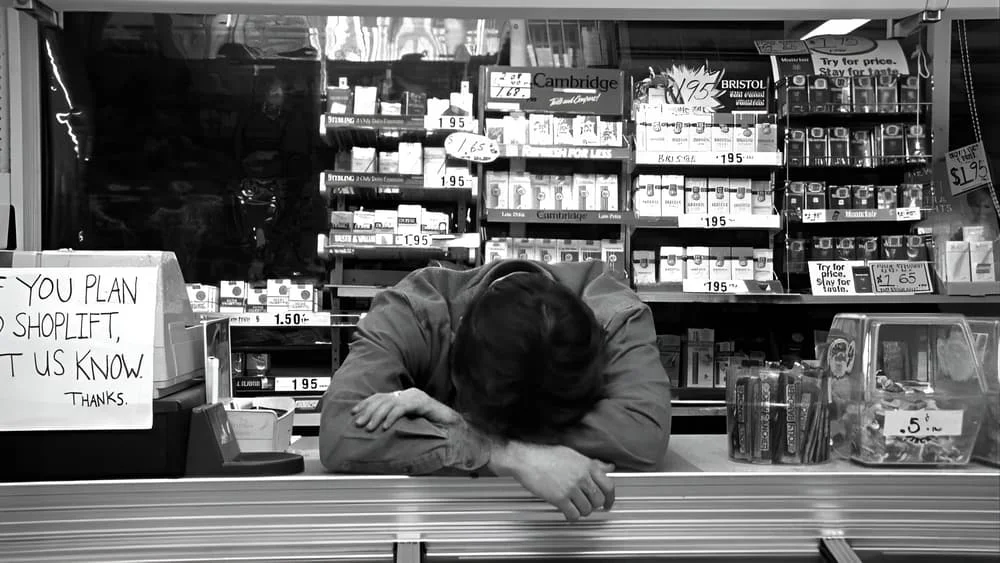

-
30 years later, 'Clerks' is a reminder of what the American independent scene can be
by Mitchel Green - January 25, 2024
|
mitchelgreen34@gmail.com

source: The Movie Database
Thirty years ago this week, “Clerks” premiered at the Sundance Film Festival, becoming a milestone release in the festival's history and the ‘90s American independent movement. Shot for less than $30,000 and dealing directly with the everyday concerns of regular people, the film is a rallying cry for cinema as the quintessential populist art form — made for the masses by those working outside the system.
In many respects, American cinema and American culture have moved past a film like “Clerks.” It’s a film that captures 1990s youth culture and values, meaning its content hasn’t aged particularly well. There’s the normalized casual misogyny and homophobia, but on top of that, we don’t live in a world where young people can fuck around trying to figure out what they want in life anymore. “Clerks” is not a film that universally reflects what it’s like to be young, but instead paints a portrait of what it was like to be a middle-class white male in your early 20s in the mid-90s. That said, “Clerks”’s aesthetic value keeps it from falling too deep into product-of-its-time territory to champion. The film’s low-budget amateurism remains endearing and inspiring all these years later.
That amateurism is sorely lacking in the American independent scene of 2024. The major releases out of Sundance in recent years have felt less like artists trying to find a way to work outside the system and more like filmmakers trying to platform themselves to break into the system. Not that “Clerks” is necessarily the former, but the current buzziest American independent releases feel too clean, too polished. There’s big money to be made at Sundance now from major studios’ “independent” subsidiaries or big tech streamers trying to build their brand with specific types of content. If you’re an artist, how do you get by in the current economic climate if you aren’t maximizing your film’s potential earnings by giving the major distributors what they want? It feels like a depressing “selling out” moment for younger filmmakers, but it’s actually just a byproduct of studios’ rapidly growing disinterest in producing adult dramas, so those projects get pushed into the independent space. These films are technically independent in the sense that they aren’t being produced by major Hollywood studios, but they aren’t truly independent. It’s art driven by market forces. Is there much difference between that and being driven by profit-first studio executives?
Contrary to what its marketing and reputation over the decades led me to believe, “Clerks” is not bereft of ideas. It’s just that the ideas that shine through 30 years later aren’t any of the ones the characters have conversations about. One could argue that the film aims to make fun of these dumb and pretentious assholes, but I think the film empathizes with its characters too much for that. A scene toward the end of the film where Jay and Silent Bob tell what he needs to hear plays too earnest to claim “Clerks” satirizes these types of people.
The film’s big idea is that if you want to do something, you just have to do it. It works on two levels — both in the story and the filmmaking style. In the story, some characters, like Randal, already realize they should prioritize what they want. His no-fucks-given attitude is a terrible way to treat others and isn’t getting him anywhere in life, but he is right where he wants to be. If he wants something, he goes after it. He’s happy because of it.
Dante, on the other hand, is tortured by a lack of direction, and indecisiveness pushes him toward situations he doesn’t want to be in. He goes to work when he doesn’t have to, which messes with his plans. He can’t decide which girl to be with, so he loses both. He won’t take the leap and go to school, so he’s stuck at the convenience store forever. Part of the problem is Dante doesn’t know what he wants, but at his core he does. It’s fear and insecurity that keep him from realizing it. He doesn’t want risk, so he avoids it.
The film’s aesthetics reflect its thematic content in a way. The riskiness Dante is unwilling to take is what Kevin Smith faced when setting out to make a feature in these circumstances. You cannot make art without risk, and Smith put it all on the line. And yet, those high stakes never create tension in the final film. Smith is loose and confident. If you don’t like what he is showing you, he does not care (though it seems that doesn’t apply to his later efforts). As with the best independent films, that independence translates to freedom from preconceived notions of what the medium can be. It’s a revolutionary film without actually doing anything revolutionary.
“Clerks” doesn’t have the staying power of many ‘90s indie cinema classics, but the idea of “Clerks” should continue to live on for generations. You don’t need anyone’s permission or money to make art. If you want to do it, do it. Whatever you create will be the purest version of yourself if you put everything you have into it. Maybe it won’t work out. That’s the risk you take. But it’s something you’ve got to do.